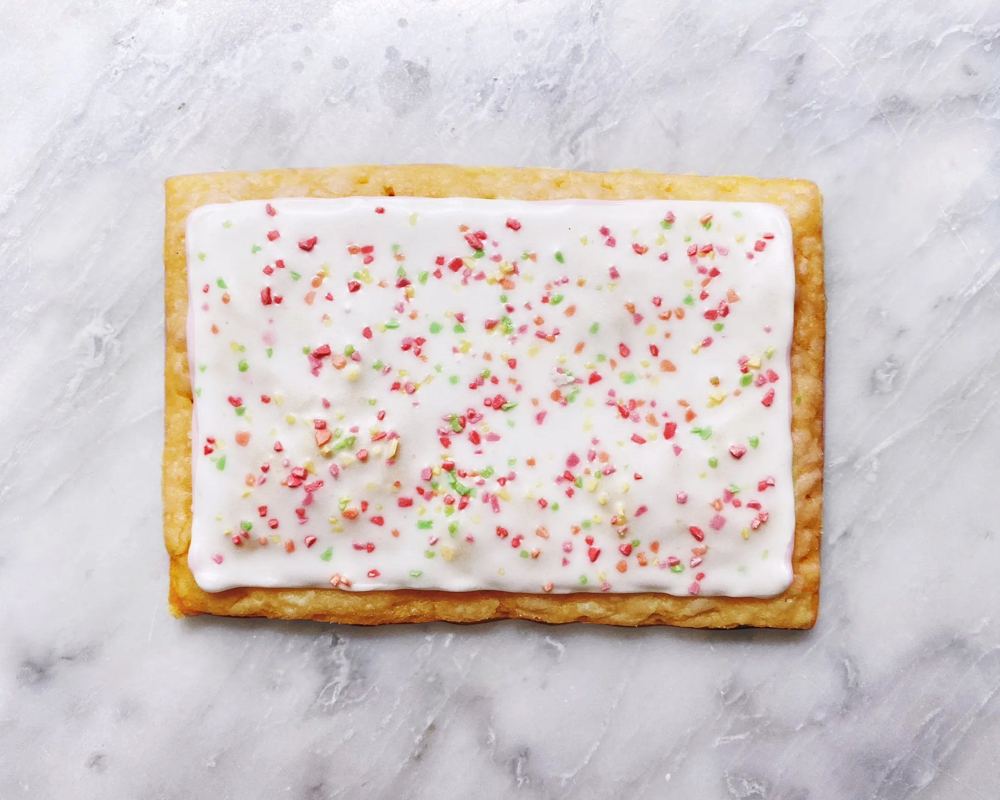

Poptart Recipe
Recipe

The above is the poptart youll be making today.
Ingredients
- Toaster
- Poptart
- An Electric Source (Optional)
Steps (Cooked)
- Unwrap poptart.
- Put poptart in toaster.
- Plug in the toaster.
- Turn the power knob to three
- Push the toaster down.
- Closely monitor toaster to make sure you dont smell burning
- Once finished, put the poptarts on a plate. Do NOT use silverware to get the poptart out of the toaster!
- Enjoy
- Re-evaluate your life choices. (Optional)
Steps (Uncooked)
- Unwrap poptart.
- Eat the poptart.
- Feel your sins crawling on your hands, for not toasting it, you monster.
- Shame on you.